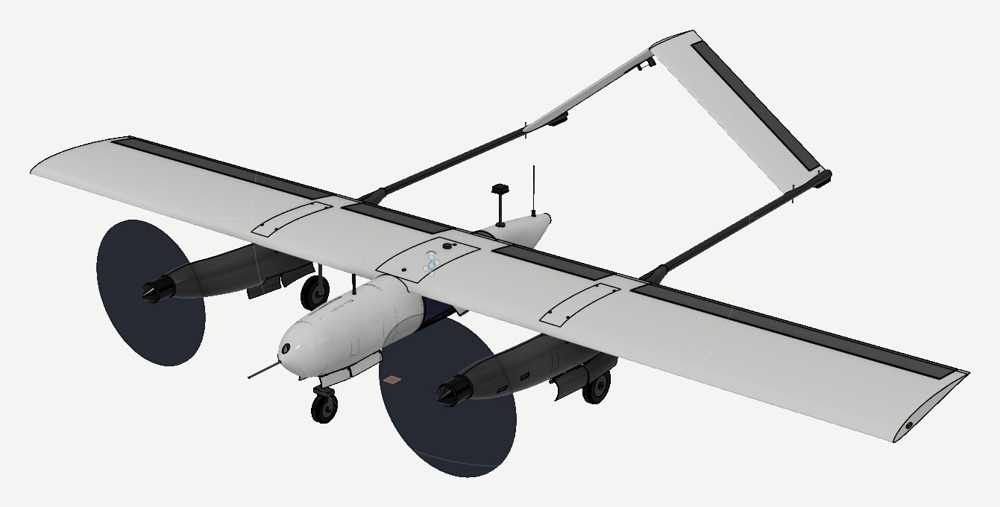
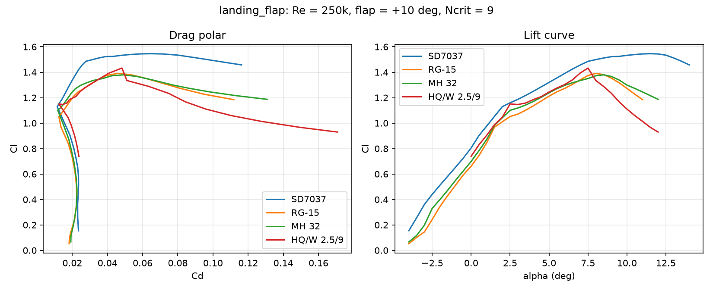
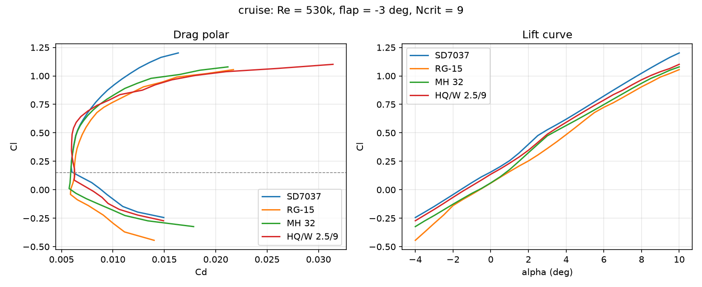
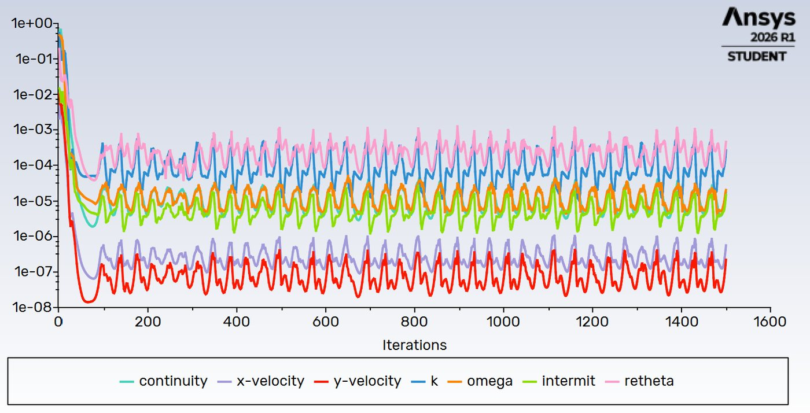
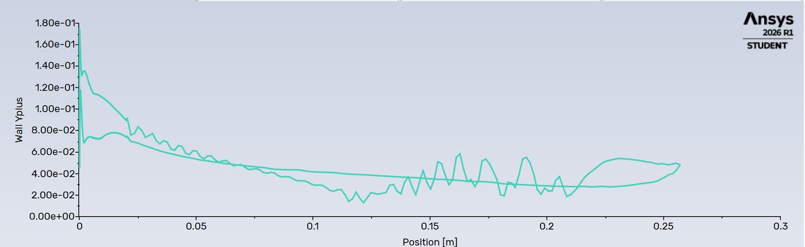
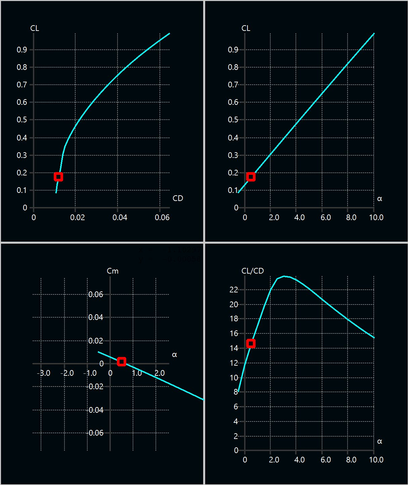
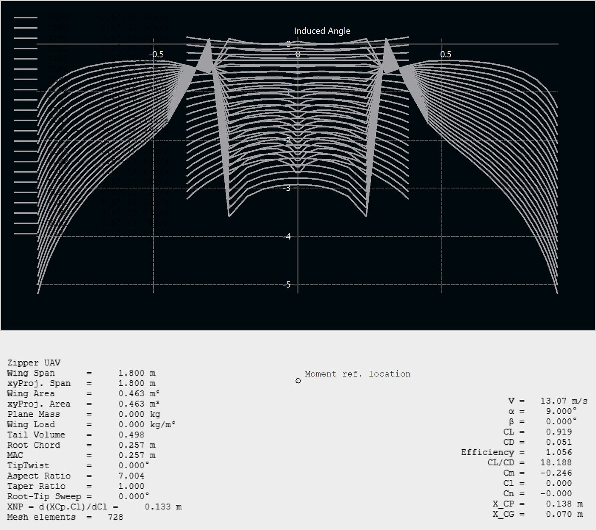
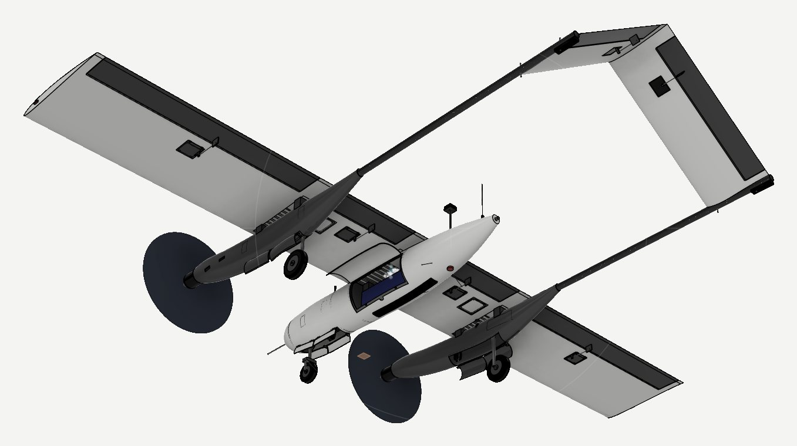

Lehigh rocket club
Liquid rocket motor test stand
Helped set up the transducers and load cell on the club's liquid rocket motor test stand, with some work on the DATAQ DI-2108 data acquisition unit.
Electrical Engineering · Lehigh University
EE student and NCAA Division I athlete. I build flight hardware: flight controllers, power distribution, telemetry links and the airframes they fly in.
Independent project · Phase 2 · In design
I know most Inverted V-tail UAVs that match my model only use one propeller in the back of the fuselage, but I wanted to test this airframe and if would work and leave space for a payload to be deployed from the rear of the fuselage instead of inside. I haven't seen a UAV with this airframe with two props so I figured why not try it.
So transitioning from the first VTOL design to the second version of my UAV trades vertical takeoff for speed. It is a 1.8 m twin-boom airplane with two wing-mounted motors, an inverted-V tail and retractable gear, sized to cruise at 30 m/s. I re-ran the airfoil selection in XFOIL, checked the winner in Ansys Fluent, analyzed the whole aircraft in XFLR5, then modeled every part in Fusion 360.
Flight Controller wise I wanted to build everything from the ground up so I can better understand how to build/program flight controllers from scratch. It uses an stm32F411RE microcontroller that controls the IMU, barometer, servos, and the MAVLINK. I wanted to emulate what a military ground control station is like so I built my own using C++ and control the drone using a USB joystick.

Phase 1, further down this page, was a tri-tiltrotor built to take off vertically and loiter for an hour or more. When I changed the mission to speed, most of that design stopped paying for itself. A third motor, tilt servos and a hover-sized battery are dead weight once the wing carries the aircraft in cruise, so Phase 2 keeps two fixed motors on the wing and lands on wheels.
The faster mission also changes what the wing has to do. Lift grows with the square of airspeed, so at 30 m/s the wing needs a lift coefficient of only about 0.17 to hold up 4.5 kg, compared with about 1.05 for the old slow loiter. The old airfoil study optimized a regime the new aircraft never flies in, so I redid it from scratch.
Check: 4.5 kg × 9.81 = 44.5 N of weight. At 30 m/s the dynamic pressure is ½ × 1.225 × 30² = 551 Pa, so CL = 44.5 ÷ (551 × 0.463 m²) = 0.174. XFLR5's whole-aircraft model gives 0.174 at 30.07 m/s.
| Phase 1: tri-tiltrotor | Phase 2: twin-prop fixed wing | |
|---|---|---|
| Mission | Long endurance, vertical takeoff | Speed: 30 m/s cruise |
| Propulsion | 3 tilting rotors, 4S | 2 fixed tractor props on wing nacelles, 6S |
| Wing | 1.5 m span | 1.8 m span, AR 7, 257 mm chord |
| Airfoil design point | CL ≈ 1.05 at Re ≈ 80,000 | CL ≈ 0.15 at Re ≈ 530,000 |
| Tail | Inverted V on one boom | Inverted V on twin booms |
| Takeoff and landing | Vertical | Retractable tricycle gear, flaps |
I wrote a Python driver for XFOIL that runs each candidate through the four points of the mission: cruise (Re 530,000, flap reflexed −3°), dash (Re 700,000), and landing (Re 250,000) clean and with 10° of flap on a 75% chord hinge. Four sections made the shortlist: SD7037 (the old choice), MH 32, RG-15 and HQ/W 2.5/9. The script scores each on cruise drag (40%), flapped CL,max (30%), dash drag (15%) and how gently it stalls (15%), and penalizes any section too thin for the 14 mm spar.
| Airfoil | t/c | Cd cruise CL 0.15 | Cd dash CL 0.10 | CL,max 10° flap | Lift lost 2° past stall | Score |
|---|---|---|---|---|---|---|
| MH 32 | 8.7% | 0.00589 | 0.00521 | 1.38 | 7.7% | 0.66 |
| SD7037 ✓ | 9.2% | 0.00612 | 0.00705 | 1.55 | 3.8% | 0.61 |
| RG-15 | 8.9% | 0.00624 | 0.00553 | 1.39 | 8.4% | 0.29 |
| HQ/W 2.5/9 | 9.0% | 0.00628 | 0.00588 | 1.43 | 18.5% | 0.19 |
Why SD7037 over the top score: MH 32 won the weighted score almost entirely on dash drag. In cruise, where the aircraft spends its time, SD7037's drag is only 4% higher. In exchange it gives 12% more lift with flaps (1.55 against 1.38), stalls about 3° later, and loses half as much lift past the stall. For a 5 kg airplane landing on retracts, a slower and more forgiving landing was worth more than a faster dash. Its 9.2% thickness also leaves the most room for the spar.
Check: the cruise drag penalty is (0.00612 − 0.00589) × 551 Pa × 0.463 m² ≈ 0.06 N, about 2% of the 3.1 N the wing and tail make at cruise. The landing benefit is √(1.55 ÷ 1.38) ≈ 1.06, so about 6% slower approach speed with the same margin to stall.


XFOIL is a fast panel method, so I checked SD7037 at the cruise point with a 2D RANS model: 257 mm chord at 30 m/s and −2° angle of attack. I used the Transition SST model so the solver predicts where the boundary layer turns turbulent instead of assuming it is turbulent everywhere. That model needs a very fine first cell at the wall. Wall y+ peaked at 0.18 at the leading edge, well under the target of 1, and the mesh's orthogonal quality averaged 0.98 with a minimum of 0.39.
The residuals fell four to seven orders of magnitude, then settled into a regular oscillation instead of flattening out, and the lift coefficient oscillated with them (standard deviation 0.03 around a mean of 0.14). That pattern most likely comes from a laminar separation bubble that a steady solver can't hold still, so I averaged the last 500 iterations. The averaged drag came out about 11% above XFOIL's cruise prediction of 0.0061, which is close agreement for two very different methods.


Airfoil data alone says nothing about stability or how the wing and tail work together, so I built the aircraft in XFLR5: the 1.8 m wing and the inverted-V tail, each running on foil polars I generated from Re 40,000 to 800,000 (SD7037 for the wing, NACA 0009 for the tail). The vortex-lattice analysis at the 10 lb (4.54 kg) design weight answered three questions:


The CAD model carries each result into a physical part:
Check: stall speed scales with the square root of weight, so the heavier build flies its 9° flaps-up point at 13.1 × √(5.4 ÷ 4.54) ≈ 14.3 m/s. That is still under the 15.5 m/s landing speed the airfoil study planned for.

Independent project · Phase 1 · First concept
A fixed-wing drone built for 1 to 1.5 hour flights that takes off and lands vertically. Three rotors tilt from hover to forward flight. I designed the concept, wrote the flight firmware on an STM32, soldered the flight controller and power board, built a ground station, and ran CFD to choose the airfoil.

The aircraft started on a whiteboard: a 1.5 m wing with two tilting rotors, a third rotor at the tail, and an inverted-V tail on a single boom. The same sketch lays out the ground link, from the RF transceiver to a laptop ground station with a HUD, an Xbox controller for input, and a video monitor for a camera added later.
The next revision added a new test stand and new arms that house the servos for rotor tilt.

Getting the flight controller and ground station to talk over the LR900 radios took a lot of trial and error. The firmware sends a telemetry packet every 10 ms over UART to the radio, and the ground station decodes it as MAVLink.
Debugging: early runs printed garbled bytes on the serial console and the MPU-6050 answered its WHO_AM_I register with 0x00, which meant the I²C read was failing before any flight data could be trusted.

I hand-soldered the flight controller board and the power distribution board that feeds the motor ESCs, then brought the system up on the lab bench. An Xbox controller, read by the ground station, set motor speed so I could test the whole chain from stick to prop.
The same firmware runs the hover PID loop, with integral and output limits to keep the motors in a safe range.

The first airframe uses carbon fiber tubes with 3D-printed mounts that hold the motors and the tilt servos. All the electronics from the bench, including the flight controller, power board and radio, moved onto the frame.
The ground station HUD shows attitude, throttle in microseconds, hover mode status, flight time and airspeed, all live over the telemetry link.

I simulated candidate airfoils in 2D with a steady, pressure-based solver and the SST k-ω turbulence model, then compared lift and drag coefficients. An early run threw negative-k warnings in thousands of cells. After fixing the setup, the final run converged cleanly, with residuals falling more than five orders of magnitude and both coefficients holding flat.


Lehigh rocket club
Helped set up the transducers and load cell on the club's liquid rocket motor test stand, with some work on the DATAQ DI-2108 data acquisition unit.
Internship · PennPak Solutions